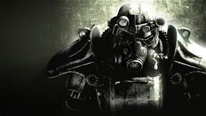

Fallout games are a must have for any apocalypse fans!
Fallout one ,featured in 1997, gives a nice hybrid gameplay of a fresh new combat system intertwined with a nice comic book natsalgic feel. Although this game is well overdated I recommend getting it before playing any of the others. Bethesda does a wonderful job, even back in the day, of creating a boundless world and tons of gameplay: With humor included!
Fallout two was made pretty much the same as the first but in a diffrent area and with a couple improvements. Combat remains turn based but it certainly doesnt fail to deliver, dailogues develop in to talking avatars, inventory access is made easier, and if you work hard enough you can even have a fully functioning car in the game.
Fallout Tactics brought a new system to the series with it's spin off. The game actually included a squad you could command and action was set in real time. Although this game was a little bit underrated I personally still count it among the series because it's just as amusing as the first two, and brought life to Fallout 3!
In 2008 Fallout 3 was released on Xbox 360. This game revolutionized the combat system in the finalized form of V.A.T.S.; not to mention it put the fallout series on the map for all gamers. For those who enjoy modern mechanics, and don't wish to dig through the web for the older games I suggest starting with this one as an introduction.
Fallout:New Vegas had a rough release. The makers decided to tweak the combat system a little with armor piercing bullets.. and well it didn't turn out as planned. The game added a survival feature where you actually had to eat, drink, and stay rested in the game. They also introduced using campfires to cook meals and improved the crafting system by a mile. All setbacks aside it is not a bad game, and has just as much flair as the rest.
Fallout 4 released on Xbox One last year. This added a base building concept to the game which players really enjoyed. They also upgraded how power armor works and turned it into a literal mechsuit the players can climb in and walk around in. Although I haven't gotten much play time with this game I know they did not fail to deliver with this one.
Fallout releases by year:
| Released in | |||||
|---|---|---|---|---|---|
| Fallout 1 | Fallout 2 | Fallout: Tactics | Fallout 3 | Fallout: New Vegas | Fallout 4 |
| 1997 | 1998 | 2001 | 2008 | 2010 | 2015 |